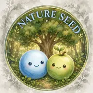
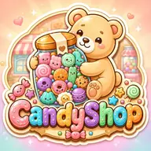
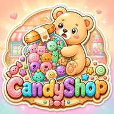
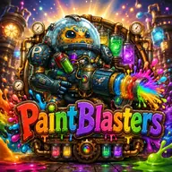
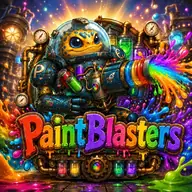

繪圖解決物理難題
Nature Seed
Nature Seed 是一款已發布的移動繪圖解決物理謎題，旨在花費有限的線路預算將 Water Drop 和 Seed 結合在一起。該遊戲於 2026 年 9 月 10 日發布，共有 10 個發布級別，涵蓋實體筆觸、效率明星、持續進步和水彩修復。
遊戲玩法：每一次擊球都成為實體關卡的一部分，一行解決即可獲得三顆星。
繪製物理路徑、合併糖果、建造彩色鏡頭或旋轉神聖塔。每場遊戲都以一個可讀的移動動作開始。

Nature Seed 是一款已發布的移動繪圖解決物理謎題，旨在花費有限的線路預算將 Water Drop 和 Seed 結合在一起。該遊戲於 2026 年 9 月 10 日發布，共有 10 個發布級別，涵蓋實體筆觸、效率明星、持續進步和水彩修復。


Candy Shop 是一款舒適的移動物理合併謎題，具有完整的 13 種糖果進化、十個重寫場地的容器、八種特效以及圍繞保持、著陸預覽和下三個隊列構建的規劃層。


Paint Blasters 是一款移動顏色破壞物理謎題，其中三種顏色輸入解析為 35 個編寫的彈體配方之一。瞄準七個區塊原型，將一次精確命中轉化為全塔範圍的連鎖反應。
Ball is God?! 是一台硬派垂直下降街機，水平拖曳使塔圍繞 Espa 旋轉。跳過三次著陸即可發動粉碎，使用冷卻護盾抵禦致命打擊，並帶著業力穿過十個神話地點。
每個遊戲都以一觸式規則開始——抽牌、掉落、混合或躲避——然後添加角色、清晰的反饋和結果，玩家無需手冊即可閱讀。
每一次點擊、線條、掉落和射擊都會立即得到視覺反應，因此因果關係清晰可見。
在需要解釋性文本之前，動作、對比和節奏顯示了目標和結果。
吉祥物、物品和UI在裝飾之前就已經有了個性。
控制、節奏和佈局專為拇指、短會話、可讀的 UI 和小螢幕上的清晰決策而構建。
衝擊、合併、飛濺、勝利和失敗時刻都經過調整，直到感覺清晰為止。
軟演示為計劃、掌握和重播留下了空間。
簡單的形狀、強烈的輪廓和一致的介面藝術讓每個世界都易於識別。
背景、UI 和角色即使在主循環之外也應該安靜地回應。
行動遊戲的觸覺規則、可讀結果和穩定的物件行為。
柔軟的世界，可以平靜地進入，並令人滿意地掌握。
具有閒散生活、反應和情感清晰的吉祥物。
簡單的顏色規則，以玩家可以從短片中理解的格式開啟戰術選擇。
場景保持可識別性，無需與遊戲玩法、文字或控制項競爭。
月亮、傳送門、森林、城堡和克制的角色。
解鎖尊重會話長度和玩家動機的路徑。
介面使用清晰的層次結構、即時回饋和遊戲特定的視覺語言。
WillowinWorlds 開發行動優先益智和街機遊戲：Nature Seed 已發布，而 Candy Shop、Paint Blasters 和 Ball is God?! 仍在生產中。每個項目都有一個公共遊戲頁面、當前建置狀態、註明日期的開發日誌和新聞資產。
目前的工作涵蓋繪製求解線物理、十個容器中的糖果合併、35 種顏色彈丸配方以及跨越十個地點的旋轉塔下降。
繪製有限的實體路徑，管理不斷變化的糖果容器，組裝彩色鏡頭或旋轉下降的塔。打開每個遊戲頁面以了解其當前範圍、製作狀態和最新更新。
定義奇幻、清晰的類型、玩家承諾和核心觸覺循環。
使用真實輸入、回饋和失敗狀態建立最短的可玩證明。
調整控制、摩擦、節奏、可讀性以及重複後循環是否仍然感覺良好。
形狀輪廓、調色板、UI 語言、圖示可讀性和角色身份。
擴展內容、系統、進程、最佳化和技術基礎。
優化過渡、VFX、音訊節拍、入門、可訪問性和使用者舒適度。
準備商店資產、新聞資料、分析、即時更新和社區循環。
衡量發布情況，傾聽玩家的意見，並透過重點更新來保持每個世界的健康。
每個遊戲頁面的最新註釋，基於現在 Unity 版本內的可玩系統。
Nature Seed 以最終標題推出，包含 10 個手工製作的關卡、生產線效率星星、持續進步和水彩修復獎勵。
開啟 Nature Seed 開發日誌主選單、關卡選擇、HUD 控制和命令圖示現在共享視覺語言；額外的引擎內壓力測試涵蓋了更新的流程。
開啟 Candy Shop 開發日誌投射物行為、Match-3 解析度和命中效果經過測試和加強，以獲得更一致的組合結果。
開啟 Paint Blasters 開發日誌角色呈現、確定性生成和荊棘危害得到了協調的視覺和生產驗證通過。
開啟 Ball is God?! 開發日誌我們開發了四款行動優先遊戲：抽獎物理謎題、糖果合併謎題、顏色混合實體街機和故事驅動的垂直下降街機。
是的。它遵循裝置的簡化運動首選項，在啟用「儲存資料」時減少效果，並在隱藏選項卡時暫停動畫。
是的。第一次造訪時，它會使用已儲存的主題（如果存在），然後是系統顏色首選項，然後是當地時間。如果這些都無法讀取，WillowinWorlds 將在暗模式下啟動。
我們歡迎出版商對此處所示的四個項目進行審核。新聞資料袋列出了每個遊戲的建造狀態、公共資產和直接聯繫途徑。
是的。我們從第一個原型開始就圍繞移動輸入、會話長度、螢幕清晰度和效能進行設計。
是的。藝術家、Unity 開發人員、設計師、動畫師和音訊合作者可以透過 contact@willowinworld.com 與我們聯繫，並提供重點作品集連結和角色背景。
我們對符合當前四個專案之一的藝術、Unity、設計、動畫、音訊和出版合作持開放態度。
這會準備一封發送至 contact@willowinworld.com 的電子郵件，以便媒體、出版商和協作請求能夠透過一條清晰的直接路徑進行處理。
我們歡迎那些關心感覺、身分和玩家至上製作的有思想的合作者。
發送重點作品集連結、角色、可用性以及您覺得最接近的 WillowinWorlds 遊戲或風格區域。
公共網站故意簡單：沒有分析腳本、廣告像素、追蹤 cookie、第三方嵌入或帳戶系統。
網站可能會在您的瀏覽器中保存一個小的本地主題首選項，以便日/夜切換保持一致。它不會建立玩家帳戶或行為檔案。
主頁聯絡表單將其姓名、電子郵件、查詢類型和訊息欄位保留在相同標籤會話儲存中，因此重新載入不會刪除您的草稿。您可以在表單中清除它，瀏覽器會在該選項卡會話結束時將其刪除。
如果您向 WillowinWorlds 發送電子郵件，您的訊息、電子郵件地址和連結僅用於回覆您的詢問。
WillowinWorlds，除非另有說明，工作室標誌、遊戲名稱、角色、螢幕截圖、視覺資產和網站副本均屬於 WillowinWorlds。
媒體、發行商和創作者可以參考公共遊戲頁面，並使用預覽層材料進行報道、發行商審查和商店參考模型，並獲得 WillowinWorlds 信用。
公開存取資產並未授予轉售、重新分發、鑄造、使用其訓練人工智慧或機器學習資料集、冒充工作室或從中建立不相關商業產品的權限。
WillowinWorlds 讓公共網站保持小型、靜態和低依賴性，以減少攻擊面，同時保留精美的互動體驗。
本網站避免使用第三方腳本、嵌入、帳戶和外部表單處理器。它使用嚴格的內容安全策略，沒有內聯事件處理程序和直接電子郵件路由進行聯繫。
當安全報告的範圍僅限於公共 WillowinWorlds 站點並負責任地共享時，我們歡迎安全報告。